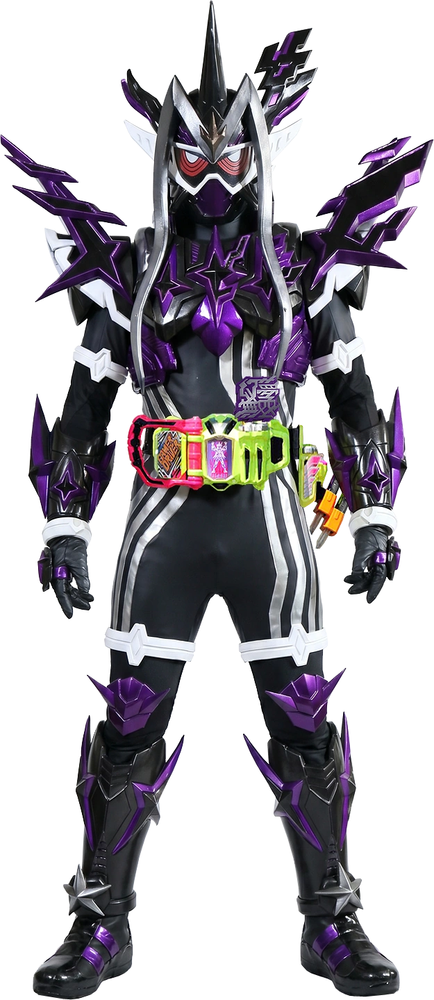
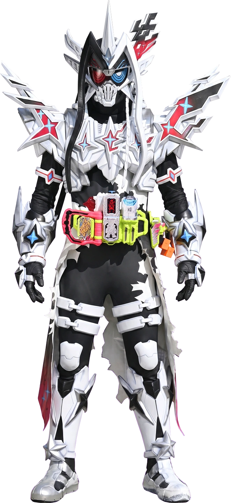

Project
Perkenalkan
Halo, nama saya Yazid. Saya seorang developer yang sedang belajar membuat website. Memiliki Hobi bermain game, mendengarkan Musik, membaca Novel, Majalah, Komik, dan juga menonton berbagai macam Film. Saya juga suka belajar hal-hal baru, terutama yang berkaitan dengan menciptakan sesuatu seperti teknologi dan pemrograman. Saya berharap dapat terus mengembangkan kemampuan saya dan berkontribusi dalam proyek-proyek yang menarik di masa depan. Motivasi saya mempelajari pemrograman adalah untuk menciptakan sesuatu yang menarik, unik, bermanfaat, dan juga untuk meningkatkan kemampuan diri sendiri. Saya percaya bahwa dengan belajar pemrograman, saya dapat mengembangkan kreativitas saya, memecahkan masalah, dan menciptakan solusi yang inovatif. Cita-cita saya adalah menjadi seorang Developer yang handal dan dapat memberikan kontribusi positif bagi masyarakat melalui teknologi dan hiburan.
-Kreatif dalam menciptakan desain dan konsep yang menarik.
-Problem-solving/Computational Thinking,
Memiliki kemampuan analisis yang baik dalam memecahkan masalah.
-Mampu bekerja secara mandiri maupun dalam tim.
-Mampu belajar hal-hal baru dengan cepat dan efektif.
-Ambisius dan selalu berusaha untuk meningkatkan kemampuan diri sendiri jika itu memungkinkan.
DAY 1 Hari pertama adalah hari di perkenalkan nya HTML, semuanya berjalan cukup baik di hari pertama
DAY 2 Hari kedua pembelajaran berlanjut dengan cukup baik tanpa adanya masalah
DAY 3 Hari ketiga latihan mengetik dengan 10 jari
DAY 4 Hari keempat pembelaran masih mengenai latrihan mengetik, dan itu cukup sulit untuk saya menggunakan 10 jari
DAY 5 Hari kelima pembelajaran berlanjut dengan baik, saya mulai memahami konsep dasar CSS
Dunia ini bagaikan jaring laba-laba, hanya ada dua pilihan disana, kau menggunakannya, atau kau terjebak di dalam nya
